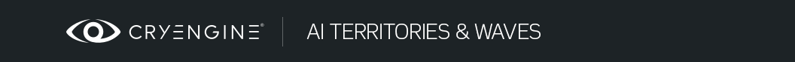

Что такое AI Территории и Волны
Территории и волны AI (T/W) помогают дизайнерам уровней контролировать количество активных ИИ (объектов AI) в любой момент игры, используя простую логику блок-схемы. T/W не следует использовать для автомобиля AI.
А Территория — это форма, определяющая область. Все ИИ, назначенные на территорию, могут быть активированы, деактивированы и созданы с помощью одного узла потока. Опционально, Волны содержатся на территориях и допускают независимую активацию AI внутри территории.
T/W позволяет дизайнерам уровней гораздо проще и быстрее настраивать AI на своих уровнях и значительно ускорять отладку проблем с блок-схемой AI. Управление AI с помощью этой системы также помогает дизайнерам не превышать максимально разрешенное количество активных ИИ. Это особенно важно на консолях.
Разделы
Примеры использования
Территории и волны AI (T/W) помогают дизайнерам уровней контролировать количество активных ИИ (объектов AI) в любой момент игры, используя простую логику блок-схемы. T/W не следует использовать для автомобиля AI.
А Территория — это форма, определяющая область. Все ИИ, назначенные на территорию, могут быть активированы, деактивированы и созданы с помощью одного узла потока. Опционально, Волны содержатся на территориях и допускают независимую активацию AI внутри территории.
T/W позволяет дизайнерам уровней гораздо проще и быстрее настраивать AI на своих уровнях и значительно ускорять отладку проблем с блок-схемой AI. Управление AI с помощью этой системы также помогает дизайнерам не превышать максимально разрешенное количество активных ИИ. Это особенно важно на консолях.
Простой пример использования T/W:
- Пузырь действия окружен территорией.
- Каждое столкновение с AI представляет собой одну волну.
- Когда игрок входит в пузырь действий, его территория активируется, а все территории из других пузырей действий отключаются. Это гарантирует, что ненужные ИИ не будут активны.
- Внутри пузыря действий встречи запускаются, как и раньше, за исключением того, что дизайнерам теперь нужен только один потоковый узел для активации/деактивации встречи вместо узлов для каждого экземпляра AI. Также больше не нужно деактивировать все ИИ вручную при запуске уровня, поскольку T/W и назначенные им ИИ отключаются с самого начала автоматически.
- Статус AI сохраняется, когда T/W отключается. Когда игрок возвращается к предыдущему AB, который был отключен, когда он покинул его раньше, те же ИИ снова будут активны.
Что такое пул сущностей?
Это набор пустых слотов, из которых может быть подготовлен объект данного типа. Это способ контролировать количество объектов, существующих в памяти.
Пул сущностей создается путем заполнения слотов определенным количеством «пустых» сущностей заданного типа — AI, транспортного средства, предмета, твердого тела и т. д. Цель состоит в том, чтобы повторно использовать эти слоты снова и снова для всех сущностей этого типа, которые существуют в мире, создавая их, когда они необходимы, и удаляя их, когда они не нужны, чтобы другие могли использоваться на месте. Как и раньше, на уровне может быть создано более 100 объектов AI, и одновременно можно использовать только от 8 до 16 из них. Хотя отрисовываются и обновляются только те объекты, которые используются, остальные объекты AI все еще существуют в памяти и просматриваются игрой в различные моменты (например, при сохранении и загрузке). При использовании пула мы удаляем эти излишки из памяти, обеспечивая наличие в памяти только 16 (или любого размера пула).
Если сущность настроена на прохождение через пул сущностей, она не создается при загрузке уровня. Вместо этого сохраняется специфичная для него информация. Когда сущность позже понадобится в ходе игры, она подготовленный из бассейна. Когда сущность больше не нужна, она освобожден обратно в бассейн.
Если объект AI помечен как созданный через пул и используется внутри волны AI, вам не нужно вручную готовить или освобождать этот AI! Вместо этого вам нужно только включить/создать волну AI. Все объединенные в пул объекты AI внутри этой волны будут подготовлены и активированы для вас, что приведет к ожидаемому ожидаемому поведению с AI Waves. Более того, если вы отключите волну AI, все объединенные в пул объекты AI внутри этой волны будут освобождены. Имея это в виду, вашего существующего Flowgraph для управления волной AI должно быть достаточно, чтобы справиться с объектами AI внутри объединяемого пула.
Когда AI уничтожен, объект AI не нужно сразу освобождать. Мертвый AI помещается в промежуточное состояние: он все еще занимает слот в пуле, но если слот крайне необходим, слот, содержащий мертвый AI, будет автоматически освобожден и использован системой. Если убито более 1 AI, вместо него будет использоваться самый дальний от игрока. Мертвого AI освобождать не нужно!
Тем не менее, по-прежнему полезно освобождать любые AI (либо отключив волну AI, в которой они находятся, либо освободив их вручную), когда они больше не нужны, например, когда игрок перешел к следующему пузырю действия или вошел в точку на уровне, где он не может вернуться дальше. Это помогает системе, и это хорошо.
AI Территории
- AI Территории можно редактировать, как AreaShapes.
- Их следует размещать вокруг области, по которой сдерживающие ИИ могут перемещаться.
- ActiveCount и BodyCount выходные данные полезны для проверки необходимости возрождения нового AI.
- Перекрытие территорий возможно. Но в этом случае будьте осторожны с автоматически назначенными ИИ.
- Когда выбрана территория, все назначенные AI отмечаются синим значком для их быстрой идентификации.
Свойства:
Недвижимость | Описание |
|---|---|
Высота | Определяет высоту, если используется в качестве 3D-территории. |
DisplayFilled | Определяет, отображается ли фигура заполненной или нет, как в AreaShapes. |
Параметры формы | Форму территории можно редактировать, например AreaShapes. Волны необходимо выбирать так же, как триггеры выбираются из AreaShapes. |
Назначенные ИИ | Отображает количество ИИ, закрепленных за этой территорией. |
Выберите «Назначено» ИИ | При нажатии на эту кнопку все назначенные ИИ будут выбраны, сама Территория будет снята с выбора. |
Флоунод:
Ввод | Описание |
|---|---|
Отключить | Отключить территорию |
Включить | Включить территорию |
Убить | Убивает всех активных ИИ на этой территории. |
Спавн | (Повторно) создать ИИ, назначенных на эту территорию (но не назначенных ни на одну волну) |
Выход | Описание |
ActiveCount | Выводит количество активных в данный момент ИИ, назначенных на эту территорию. |
BodyCount | Выводит количество убитых ИИ, закрепленных за этой Территорией. |
Мертвый | Срабатывает, когда все ИИ, назначенные на эту территорию, мертвы (работает также для возрожденных ИИ). |
Отключено | Срабатывает, когда Территория отключается (не срабатывает в начале уровня, хотя все Территории отключаются с самого начала автоматически). |
Включено | Срабатывает, когда Территория активируется. |
Создан | Срабатывает, когда ИИ появляются через Спавн вход (если Территория была отключена ранее, она включается и Включено выходные тоже загораются). |
AI Волны
- Волны связаны с территориями так же, как триггеры связаны с формами.
- Чтобы включить/породить Волну, должна быть включена ее Территория.
- ActiveCount и BodyCount выходные данные полезны для проверки необходимости возрождения новых ИИ.
- Когда выбрана волна, все назначенные ИИ отмечаются зеленым значком, чтобы их можно было быстро идентифицировать.
Свойства:
- Невозможно иметь более одной волны с одинаковым названием.
Недвижимость | Описание |
|---|---|
Назначенные ИИ | Отображает количество AI, назначенных этой волне. |
Выберите назначенные AI | При нажатии этой кнопки все назначенные AI будут выбраны, а сама сущность Wave будет отменена. |
Флоунод:
Ввод | Описание |
|---|---|
Отключить | Отключить волну |
Включить | Включить волну |
Убить | Убивает всех активных ИИ этой волны. |
Спавн | (Повторно) создайте ИИ, назначенных на эту волну. |
Выход | Описание |
ActiveCount | Выводит количество активных AI, назначенных этой волне. |
BodyCount | Выводит количество убитых ИИ, назначенных этой волне. |
Мертвый | Срабатывает, когда все ИИ, назначенные на эту волну, мертвы (работает также для повторно порожденных ИИ) |
Отключено | Срабатывает, когда волна отключается (она не срабатывает при запуске уровня, хотя все волны отключаются с самого начала автоматически) |
Включено | Срабатывает, когда волна активируется |
Создан | Срабатывает, когда ИИ появляются через Спавн вход (если волна была отключена ранее, она включается и Включено выходные тоже загораются) |
AI Свойства сущности
Территория и волна
Недвижимость | Описание |
|---|---|
Территория | Присваивает AI территории:
|
Волна | Назначает AI волне:
|
Пул сущностей — пометка объекта для прохождения через пул.
Чтобы пометить объект как проходящий через пул, вам необходимо отметить его 'Создано через пул' свойство как истинное. Это можно сделать либо через архетип, либо для каждого отдельного объекта через его параметры на панели свертки. Последний отменяет настройку первого.
Когда уровень загружается в пусковая установка, сущность будет правильно настроена для работы с пулом, если существует пул для ее обработки. В противном случае сущность будет создана как обычно.
'HiddenInGame'свойство может использоваться совместно. Если этот флажок не установлен (установлен на FALSE), объект будет автоматически подготовлен из пула в начале уровня. Если этот флажок установлен (установлен на TRUE), объект не будет подготовлен до тех пор, пока вы явно не вызовете его через Flowgraph (см. ниже).
Как настроить территории AI
- Добавьте на уровень несколько ИИ.
- Добавить AIТерритория из Сущность/AI до твоего уровня, как AreaShape.
- Выберите AI и выберите название территории в ее свойствах.
- Выберите AIТерритория снова и Добавить выбранный объект к вашей блок-схеме
- Теперь вы можете легко включать, отключать и запускать/перезапускать все ИИ, назначенные на эту территорию, с помощью всего лишь одного узла потока.
- По умолчанию территории и волны отключены с самого начала. Нет необходимости активировать вход отключения из стартового узла.
- После добавления, удаления или редактирования фигуры территории необходимо заново создать навигацию AI.
Как настроить AI Waves
- Добавить AIWave сущность из Сущность/AI до вашего уровня (который уже настроен с территорией AI).
- Выберите территорию, которая должна содержать волну, и выберите объект волны, как если бы вы выбрали триггер с помощью AreaShape.
- Выберите AI и выберите имя волны в свойствах AI. Обратите внимание, что вам необходимо сначала назначить их территории, прежде чем вы сможете выбрать волну.
- Добавьте Волну в свою блок-схему, как вы это сделали с Территорией.
- Помните, что Территория должна быть включена, прежде чем вы сможете включить Волну.
Отладка волн
ai_DebugDrawEnabledPuppets 1 Displays all enabled AIs and their Territories & Waves in the center of the screen
ai_DebugDrawTerritoriesAndWaves 1 Displays Territory & Wave below each AI (_ai_DebugDraw_ needs to be on)
ai_StatsDisplayMode 1 Not related to T/W but very useful to check the number of currently active AI
Отладка пулов сущностей
Как узнать, подготовлен ли мой уровень для пулов сущностей?
Простой! Сначала откройте свой уровень в лаунчере игры. После загрузки введите в консоль следующее:
es_DebugPool 1Вы увидите кучу текста в верхнем левом углу. В одной из строк будет упомянуто "Объекты, добавленные в закладки"и поставьте рядом с ним счет.
Если вы знаете, что на вашем уровне есть AI или другие объекты, у которых должны быть свои "Создано через пул"опция отмечена как true, и это значение равно выше 0, значит уровень подготовлен и готов к работе!
Если счет в 0, то уровень не подготовлен для объединения сущностей. В таком случае попробуйте следующее:
- Убедитесь, что архетип имеет "Создано через пулЕсли это необходимо, опция будет отмечена как true.
- Убедитесь, что параметр объекта на его раскрывающейся панели имеет значение "Создано через пул" опция отмечена как true, если это не архетип, а так и должно быть.
- Реэкспортируйте свой уровень.
Как узнать, заполнен ли бассейн на моем уровне?
Это также может вас заинтересовать, если вы хотите увидеть, как пул сущностей используется на вашем уровне. Сначала откройте свой уровень в лаунчере игры. После загрузки введите в консоль следующее:
es_DebugPool 1
es_DebugPoolFilter AI
... где 'AI' следует заменить именем пула сущностей, который вы хотите протестировать. Имена всех пулов будут видны, если вы сохраните "es_DebugPoolFilter"очистилось.
Вы должны увидеть кучу текста в верхнем левом углу экрана. Будет отображена информация и содержимое пула.
Ниже приведены полезные моменты, которые можно извлечь из этого вывода:
- Объекты с закладками — количество объектов, помеченных как созданные посредством пулов. Оно должно быть > 0, если на вашем уровне есть AI, который следует отметить.
- Бассейн «Имя» - Пул сущностей, информация о котором будет следовать, с указанием его имени. Это имя должно быть присвоено "es_DebugPoolFilter", чтобы получить дополнительную информацию о пуле, как упоминалось выше. Цветовое выделение этого текста означает следующее:
- Белый означает, что в пуле нет проблем и пока что он используется без каких-либо серьезных проблем.
- Желтый означает, что в какой-то момент уровня пул достиг максимальной вместимости. Это предупреждение: пул по-прежнему используется правильно, но мы уже на пределе! Так что будьте внимательны.
- Красный означает, что пул достиг максимальной емкости, и другой объект пытался подготовиться из пула. Пул не смог выполнить требования, поэтому организация не была подготовлена.
- Не используется — текущее количество неиспользуемых слотов в пуле объектов. В этом случае 15 слоты бесплатны для использования пользователем AI.
- Используется — текущее количество слотов в пуле объектов, которые используются в данный момент. В этом случае 1 слот используется.
- Ниже этого вывода будут показаны AI, которые в настоящее время подготовлены из пула и существуют, а затем их EntityId.
- Определения пула — классы сущностей, существующие в пуле. В этом случае показано, что пул AI работает со всеми классами Alien и классом HumanGrunt.
- Здесь в первой строке отображается максимальное количество (размер пула).
- Цветовое выделение имени класса отображает информацию о том, как этот класс использовался в пуле. PC этот цвет изменится.
- Белый означает, что из пула еще не было подготовлено ни одного объекта этого типа класса.
- Зеленый означает, что хотя бы один был подготовлен, и все до сих пор были подготовлены успешно.
- Красный означает, что по крайней мере один из них был подготовлен, но при подготовке произошел сбой.